ISACLO in action. From the same seed on “a cat, a dog, and a bear”, the baseline (SD3.5-M, SDXL) drops an instance, while ISAC keeps all three. The instance-aware semantic binding maps (right) show semantics settling into separated instances as latent optimization proceeds along the denoising trajectory.
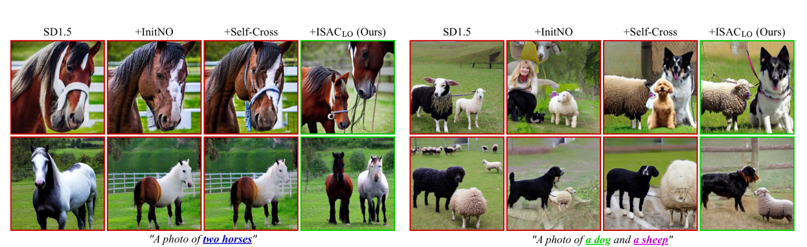
Where prior training-free methods merge or mix, ISAC separates and binds. On “two horses” and “a dog and a sheep”, SD1.5, InitNO, and Self-Cross omit, merge, or confuse instances. ISACLO (latent optimization) keeps every requested instance distinct.
Token-conditioned cross-attention can separate concepts, but it assumes instance regions have already emerged, so in early denoising it cannot carve them out, and count failures and semantic mixing persist. Self-attention, by contrast, exposes class-agnostic instance layouts early. ISAC stabilizes self-attention instance layouts first, then binds cross-attention semantics within them, fully training-free, model-agnostic, with no external vision models.
Open-weight diffusion models still omit or merge requested objects (count failures) and leak attributes across instances (semantic mixing), especially when instances are semantically similar.
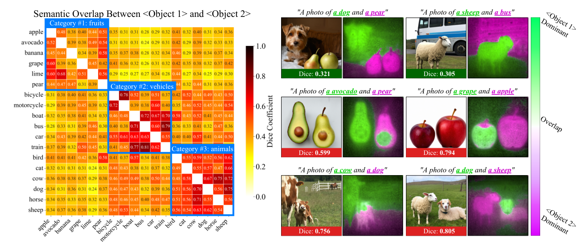
Semantic mixing is strongest within a supercategory. We build instance-aware semantic masks and measure their Dice overlap for each class pair. Overlap is consistently higher for pairs in the same supercategory (blue boxes), showing that token-level semantics spill across multiple similar objects, motivating an instance-first hierarchy.
In early denoising, instance structure emerges in self-attention while semantics are still underdeveloped. ISAC exploits this asymmetry: form instances from structure first, then assign semantics.
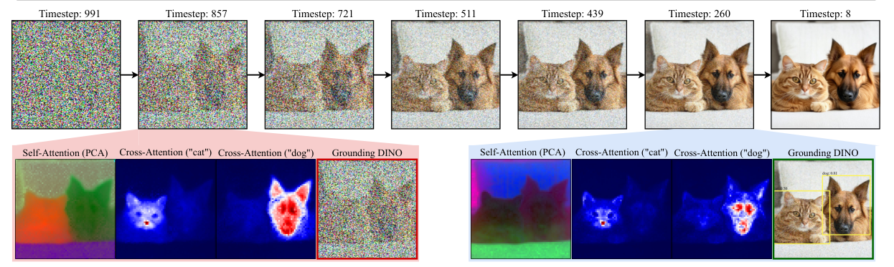
Dynamics of T2I diffusion. Early steps form class-agnostic instance structure in self-attention; semantics (cross-attention) sharpen later. Detection models such as Grounding DINO rely on strong semantic cues, so they become effective only in late steps, too late to carve out instances.
Recent open-weight text-to-image (T2I) diffusion models still struggle with multi-instance prompts, often omitting or merging instances and mixing semantics among similar objects. We trace these failures to early denoising steps, before instance boundaries are reliably stabilized.
Existing training-free guidance is largely driven by cross-attention or other token-conditioned semantic signals. Such guidance can separate concepts at the token level, but largely assumes that distinct instance regions have already emerged; in early denoising steps it cannot reliably carve out these regions, so count failures and semantic mixing persist. By contrast, self-attention exposes class-agnostic instance layouts during early denoising. To exploit this asymmetry, we propose ISAC (Instance-to-Semantic Attention Control), a training-free, model-agnostic objective that first stabilizes self-attention layouts and then binds cross-attention semantics within them, without fine-tuning or external vision models.
Across T2I-CompBench, HRS-Bench, and our newly curated IntraCompBench, ISAC consistently outperforms prior training-free methods. Furthermore, ISAC enhances layout-to-image controllers by refining coarse, overlapping bounding boxes into dense instance masks.
ISAC is a training-free, model-agnostic objective that enforces an instance-to-semantic hierarchy: it separates instance formation from semantic assignment, stabilizing class-agnostic layouts from self-attention before binding cross-attention semantics within them.
We quantify semantic mixing via the Dice overlap between instance-aware semantic masks, revealing substantially higher overlap for class pairs within the same supercategory, the regime where count failures and mixing are most severe.
A new benchmark for explicit 2–5-instance counting and intra-supercategory multi-class compositions, stress-testing the similar-object cases that existing benchmarks do not isolate.
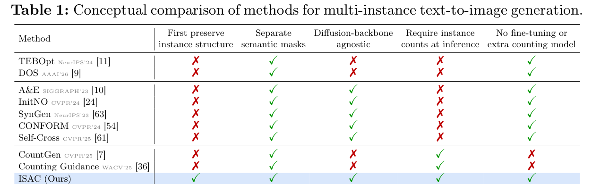
Conceptual comparison. ISAC is the only method that preserves instance structure first, separates semantic masks, stays diffusion-backbone agnostic, and needs no fine-tuning or extra counting model.
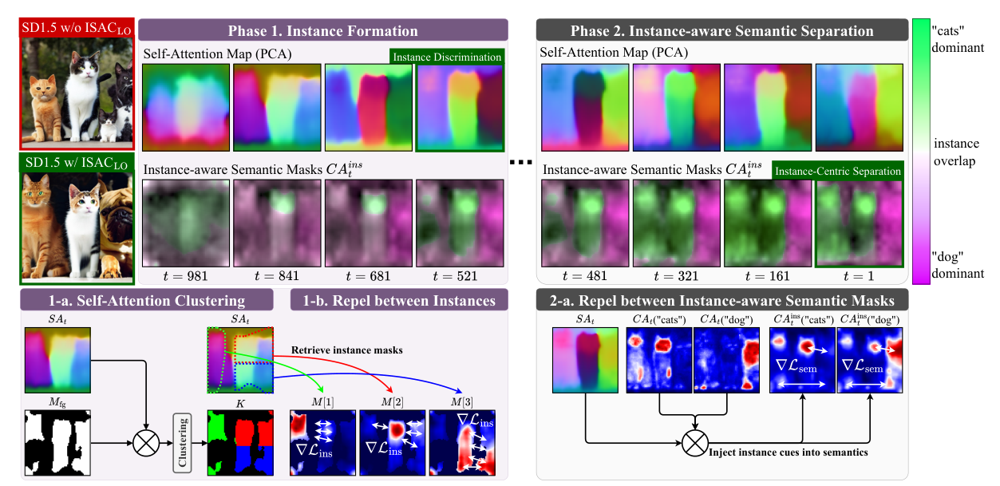
Two phases along the denoising trajectory. Phase 1 clusters the self-attention map into N class-agnostic instance masks and repels their overlap to establish clean layouts early. Phase 2 injects this stabilized structure into cross-attention to form instance-aware semantic masks, then applies a repel-and-bind loss so semantics follow instance shapes. An instance-to-semantic schedule shifts weight from Phase 1 to Phase 2 over time.
Same-instance pixels attend to each other more strongly, so the most discriminative self-attention clusters reveal disjoint instance layouts. ISAC builds a foreground gate from cross-attention, clusters self-attention into N class-agnostic masks, and penalizes their worst overlap via Maximum Pixel-wise Overlap (MPO), carving out the requested number of separated regions before any class label is assigned.
With sharp instance structure in place, ISAC injects it into cross-attention (CAins = SA · CA) to form instance-aware semantic masks, then applies a repel-and-bind loss: tokens for different instances are pushed apart, while class and attribute tokens of the same instance are pulled together, so semantics follow instance shapes without leaking across regions.
A single schedule aligns the objective with diffusion dynamics: λins(t) = t/T and λsem(t) = 1 − t/T, so early steps focus on instance formation and later steps on semantic refinement. The objective plugs into latent optimization (ISACLO) or latent selection (ISACLS), with one shared step size across all models and benchmarks.
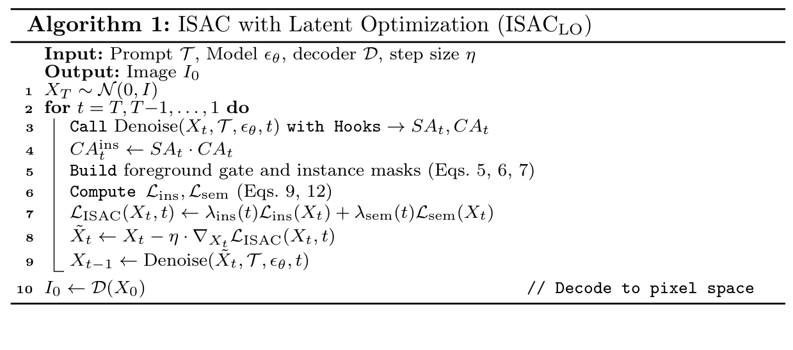
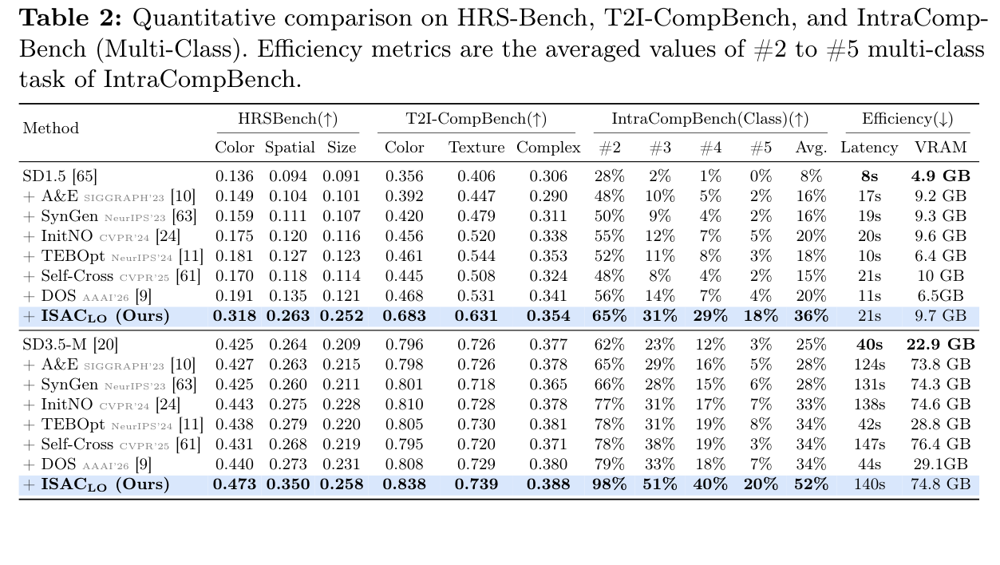
Quantitative comparison on HRS-Bench, T2I-CompBench, and IntraCompBench (Multi-Class). At inference cost comparable to other attention-control methods, ISACLO outperforms every prior training-free baseline on both SD1.5 and SD3.5-M, with the largest gains in the crowded intra-category regime (e.g., multi-class accuracy 25% → 52% on SD3.5-M).
| Loss schedule | λins(t) | λsem(t) | Multi-Class | Multi-Instance |
|---|---|---|---|---|
| Instance only | 1 | 0 | 10% | 65% |
| Semantic only | 0 | 1 | 28% | 54% |
| Fixed balance | 0.5 | 0.5 | 25% | 60% |
| Semantic → Instance | 1−t/T | t/T | 21% | 55% |
| Instance → Semantic (ours) | t/T | 1−t/T | 36% | 69% |
Effect of the loss schedule (SD1.5). Forming instances first and binding semantics later (our schedule) wins on both metrics. Instance-only cannot assign semantics, and semantic-first is unstable without prior boundary stabilization.
Given the same instance-count supervision, ISACLO reaches 70% (SD1.4) and 76% (SDXL) instance-counting accuracy, surpassing Counting Guidance (49%) and CountGen (69%), with no fine-tuning, no auxiliary networks, and no mask labels. A VLM judge (GPT-5.5) independently reproduces these gains, confirming they are not detector-specific.
Applied on top of the GLIGEN controller, ISACLO separates adjacent and overlapping boxes early in the trajectory. On HRS-Bench it lifts counting F1 from 0.666 to 0.713 and color accuracy from 0.307 to 0.452, beating the layout-refinement baseline CAR&SAR.
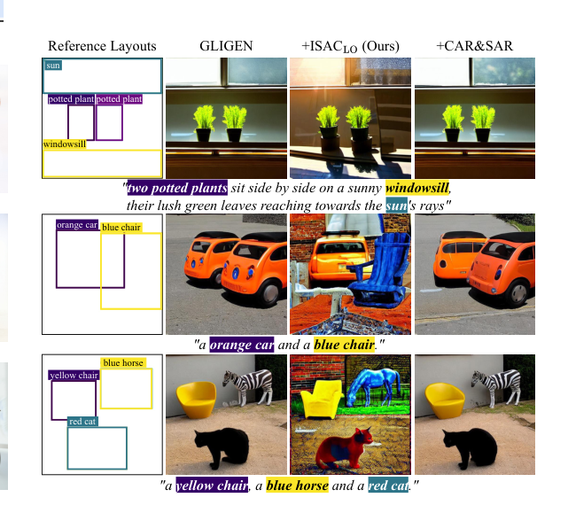
ISAC on GLIGEN. From coarse, overlapping reference layouts, ISAC carves dense instance masks so neighboring objects stay distinct, where the controller alone merges them.
Applied to strong open-weight backbones, ISACLS moves Qwen-Image (multi-class 48% → 56%) and Flux.2-dev (88% → 92%) toward the upper bound set by GPT-Image-1.5 and Nano Banana 2, with no fine-tuning.
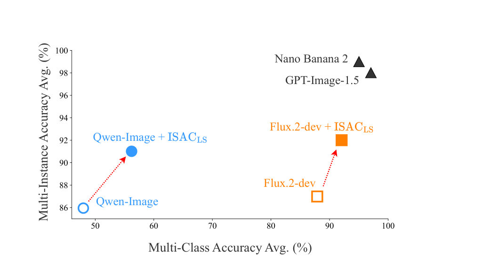
Open-weight + ISAC moves toward the commercial upper bound. On IntraCompBench, ISACLS shifts open-weight models up and to the right on both axes, narrowing the gap to closed-source systems.
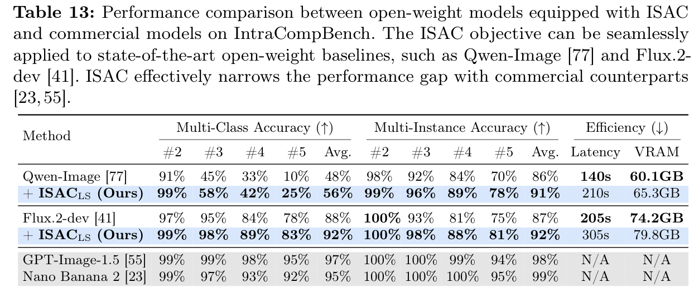
For large backbones where backpropagation is costly, ISAC also works as a verifier: score a batch of candidate latents with the ISAC objective and keep the best (best-of-10). This gradient-free variant lifts Flux.1-dev multi-class accuracy from 31% to 51% with no model gradients.
ISACLS in action. On “two cats and two dogs” (Flux.2-dev, Qwen-Image), the ISAC objective scores a 3×3 batch of candidate latents during denoising and keeps the best, rejecting samples with missing instances or semantic mixing.
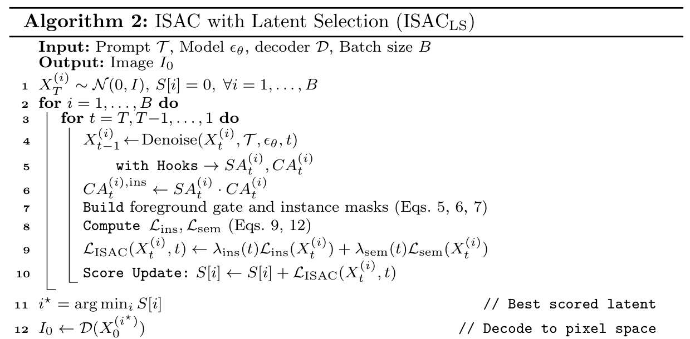
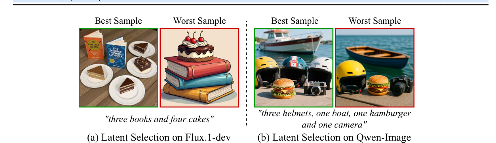
ISAC as a verifier. The ISAC score cleanly separates good candidates from samples with missing instances or semantic mixing on Flux.1-dev and Qwen-Image.
Even under tight 8-step and 4-step budgets, ISACLO boosts multi-class accuracy on Z-Image-Turbo (48% → 68%) and Flux.2-klein-4B (34% → 54%), confirming suitability for low-latency use.
ISACLO is complementary to supervised fine-tuning: stacked on TokenCompose (8% → 36%) and IterComp (5% → 30%), it further improves multi-class accuracy.
One objective serves both text-to-image backbones (SD1.5, SD3.5-M, Flux, Qwen-Image) and layout-to-image controllers (GLIGEN), with schedules fixed by design and a single shared step size.
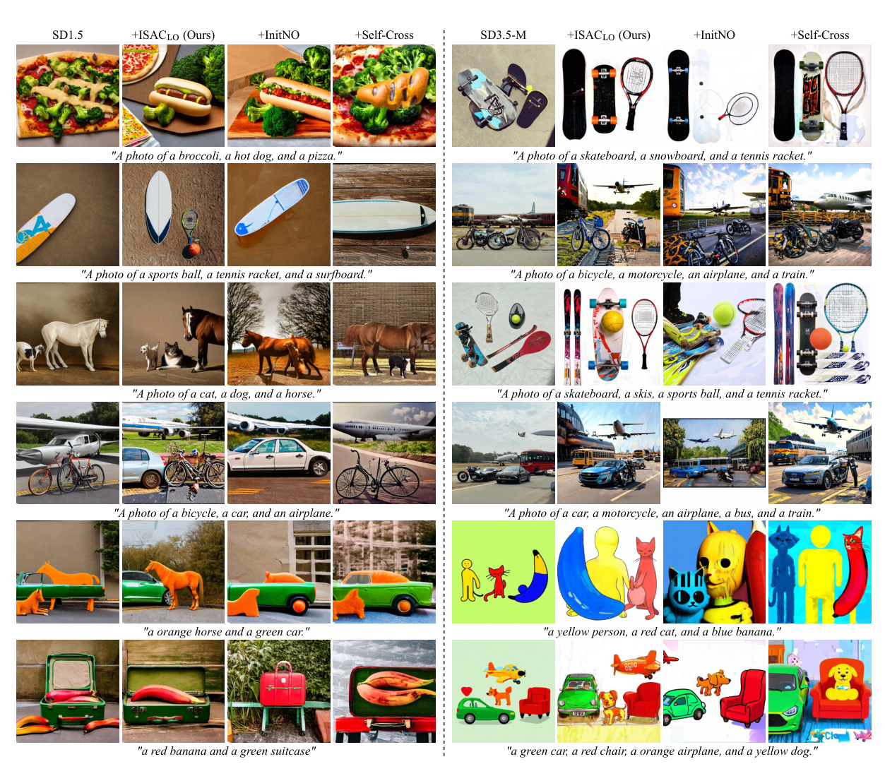
Across prompts and backbones. From simple color-shape pairs to crowded scenes of vehicles and animals, ISAC allocates distinct, spatially coherent instances to each requested class while keeping their attributes, where InitNO and Self-Cross blur boundaries or merge categories.
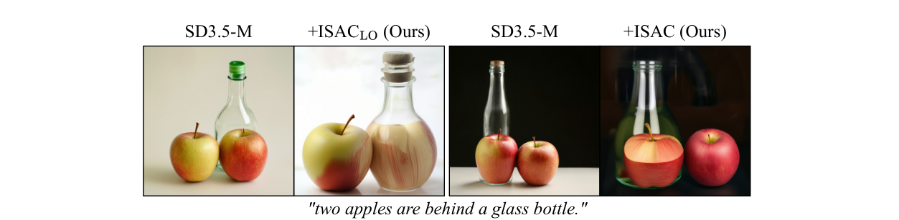
No explicit 3D understanding. ISAC operates on 2D attention, so prompts requiring depth ordering through transparent materials (e.g., “two apples behind a glass bottle”) remain hard. 3D- and physics-aware extensions are left to future work.
@inproceedings{jo2026isac,
title = {ISAC: Training-Free Instance-to-Semantic Attention Control for Multi-Instance Generation},
author = {Jo, Sanghyun and Lee, Wooyeol and Lee, Ziseok and Choi, Jonghyun and Park, Jaesik and Kim, Kyungsu},
booktitle = {European Conference on Computer Vision (ECCV)},
year = {2026}
}